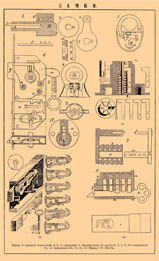

-Хм...звучит просто...Эй Свен, дай-ка мне тренировочный замок
-Хм...звучит просто...Эй Свен, дай-ка мне тренировочный замок
Глава 1
Вскрытие замков
Cамые популярные механизмы секретности в замках - это цилиндровые. Секретность в таком замке обеспечивается несколькими парами штифтов: кодовых и стопорных. Эти штифты не позволяют вращаться сердечнику цилиндрового механизма в его корпусе, если в него вставлен неродной ключ. Когда в замочную скважину вставляется «правильный» ключ (ключ, идущий в комплекте с замком или его копия), штифты встают в нужное положение: линия сопряжения всех пар кодовых и стопорных штифтов оказывается на уровне разъёма между корпусом цилиндра и корпуса замка. Таким образом, чтобы без повреждения штифтов повернуть замок, надо придумать способ, которым можно выставить штифты на нужный уровень.1
Чтобы вскрыть замок отмычкой нужно вставить отвычку с крючком и познять вверх. Далее двигать вверз-вниз пока не будет слышен щелчок и так все цилдры в замке. После надо вставить специальную отвёртку и повернуть замочную скважину в нужную сторону.

-Хм...звучит просто...Эй Свен, дай-ка мне тренировочный замок
-Три часа спустя-
-Да твою ж..! Это же тренировочный!
 -Аа, ты тренировочный просил..?
Ехидно улыбаясь, спросил Свен.
-Аа, ты тренировочный просил..?
Ехидно улыбаясь, спросил Свен.
-*возмущённо покашливает*Да.